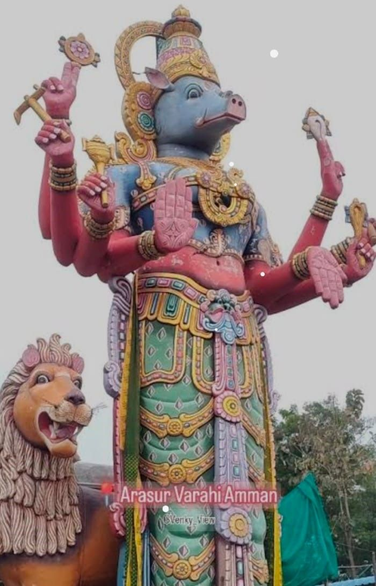

VILLUPURAM
VARAHI AMMAN TEMPLE

A 9th-century Varahi temple exists at Chaurasi about 14 km from Konark, Orissa.
Varahi is installed as Matysa Varahi and is worshipped by Tantric rites.
In Varanasi, Varahi is worshipped as Patala Bhairavi. In Chennai, there is a Varahi temple in Mylapore, while a larger temple is being built near Vedanthangal